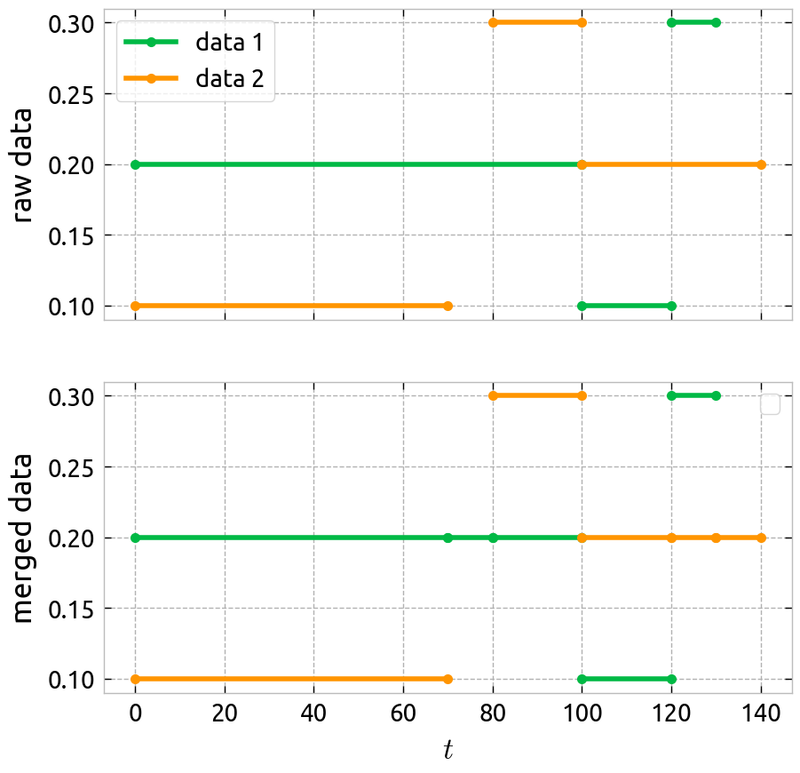

Tabular data processing for Continuous REPresentation#
To install, run:
pip install crep
This simple module provides functions for handling tabular data with a continuous axis. In certain cases, this index can represent time, but this tool was initially developed to address railway descriptions.
The tool is designed to represent linear structures (cables, rails, beams, pipes) with piece-wise constant characteristics, even when the segment lengths are highly variable.
Basic usage#
Merge function: Merges two DataFrames.
import pandas as pd
from crep import merge
df_left = pd.DataFrame(
dict(id=[2, 2, 2],
t1=[0, 100, 120],
t2=[100, 120, 130],
data1=[0.2, 0.1, 0.5])
)
df_right = pd.DataFrame(
dict(id=[2, 2, 2],
t1=[0, 80, 100],
t2=[70, 100, 140],
data2=[0.1, 0.3, 0.2])
)
ret = merge(data_left=df_left,
data_right=df_right,
id_continuous=["t1", "t2"],
id_discrete=["id"],
how="outer")
The resulting output is:
{kind=link}
Tools#
To check if your data is admissible for the merge function, you can use the tools module.
import pandas as pd
from crep import tools
df_admissible = pd.DataFrame(
dict(id=[2, 2, 2],
t1=[0, 100, 120],
t2=[100, 120, 130],
data1=[0.2, 0.1, 0.5])
)
df_not_admissible = pd.DataFrame(
dict(id=[2, 2, 2],
t1=[0, 90, 120],
t2=[100, 120, 130],
data1=[0.2, 0.1, 0.5])
)
# The second table is not admissible because two values are possible for t in [90,100].
assert tools.admissible_dataframe(
df_admissible, id_continuous=["t1", "t2"],
id_discrete=["id"])
assert not tools.admissible_dataframe(
df_not_admissible, id_continuous=["t1", "t2"],
id_discrete=["id"])
print(tools.sample_non_admissible_data(
df_not_admissible, id_continuous=["t1", "t2"],
id_discrete=["id"]
))
# id t1 t2 data1
# 1 2 90 120 0.1
Acknowledgement#
This implementation originates from an SNCF DTIPG project and is developed and maintained by Mews Labs and SNCF DTIPG.
{kind=link}
Contents: